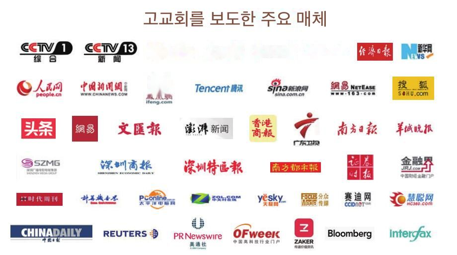

고교회 소개
고교회는 1999년 이후 27회를 치르며 국가 혁신체계의 중요한 부분이자, 중국 첨단기술 분야의 대외 개방 창구이자 성과 교류·거래의 플랫폼이 됐습니다.
성과 거래, 제품 전시, 고위급 포럼, 프로젝트 유치, 협력 교류를 아우르며 에너지절약·환경, 차세대 정보기술, 바이오, 고급 장비 제조, 신에너지, 신소재, 신에너지차 분야의 첨단기술과 제품을 중점 전시합니다. 첨단기술 성과의 상품화·산업화·국제화와 국가·지역 간 경제기술 협력에서 갈수록 중요한 역할을 합니다.
중국 국가 지도자의 기대
주룽지, 우방궈, 우이, 쩡페이옌, 후이량위, 왕양, 류옌둥과 전국인대·정협 지도자 여러분이 역대 고교회에 참석했습니다.
고교회 무대에 오른 주요 인사
♦ 존 프레스콧 전 영국 부총리, 고교회 포럼 참석
♦ 주르차니 페렌츠 전 헝가리 총리, 고교회 헝가리 분회 참석
♦ 마누엘 산체스 멕시코 중앙은행 부총재, 고교회 포럼 참석
♦ 월가 투자 대가 짐 로저스, 고교회 포럼 참석
♦ 마화텅 텐센트 회장, 고교회 포럼 참석 및 인터뷰
♦ 우허취안 중국공정원 원사, 고교회 포럼 참석
♦ 크리스토퍼 피사리데스 2010년 노벨경제학상 수상자, 고교회 포럼 참석
♦ 왕쥔 BGI 연구원장, 고교회 포럼 참석
♦ 쉬치웨이 시스코 글로벌 부사장, 고교회 포럼 참석
기회와 성과
► 기술 수요가 있는 국내외 기업, 중개기관, 수천 곳의 투자사가 모여 특허·기술 보유자가 세계 각지의 협력사를 찾을 수 있습니다.
► 매년 1만여 개 첨단기술 프로젝트가 참가해 투자자는 최신 특허, 기술, 프로젝트와 다양한 투자 기회를 찾을 수 있습니다.
► 세계 첨단기술 제품·장비 제조사가 중국 시장에 빠르게 진입할 경로를 찾을 수 있습니다.
► 로드쇼, 자본 연결, 기술 교류, 경험 공유 활동으로 창업자에게 전시·공유·교류의 장을 제공합니다.
► 권위 있는 기관의 발표회와 포럼, 리셉션을 통해 참가자에게 다양한 정보와 사업 기회를 제공합니다.
고교회의 강점
► 현재 중국 최대 규모이자 가장 영향력 있는 과학기술 전시회이며 국제적 인지도를 갖춘 브랜드 전시회입니다.
► 중국 정부의 강력한 지원을 받아 여러 부처와 선전시 인민정부가 공동 개최하며, 제1회는 주룽지 당시 총리가 개막을 선언했고 제10회에는 원자바오 당시 총리가 휘호를 남겼습니다.
► 마이크로소프트, IBM, 소니, 퀄컴, 삼성, HP, 지멘스, 도시바, 오라클, LG, 히타치, 파나소닉 등 60여 다국적기업이 여러 차례 참가했고, 텐센트, 화웨이, 킹디, 아이플라이텍, 한스레이저, 퉁저우전자 같은 중국 민영기업이 이곳에서 세계로 나아갔습니다.
► 매회 200곳 가까운 국내외 매체의 기자 1,500여 명이 취재합니다.
► 전담 홍보 계획, 기자회견, 우편·이메일 안내와 국내외 매체 협력으로 기업과 고객에게 행사를 널리 알립니다.
► 우수한 전문 관람객층을 갖추고 있으며 매년 관람객이 50만 명을 넘습니다.
주요 참가기업

